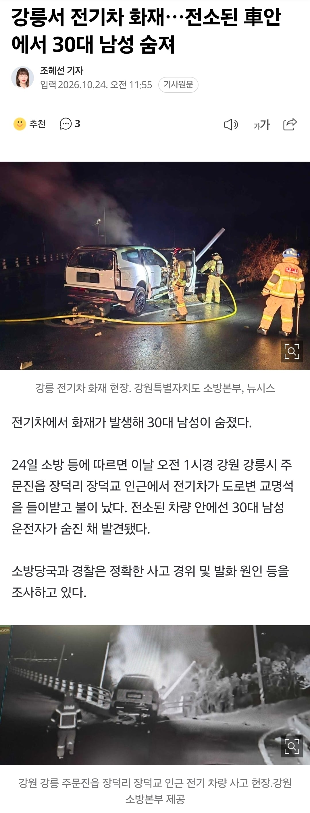

추돌사고 나고 정신 잃었을때 화재 난 게 아닐까 싶음
아9면 나름 국산 전기차 중에 탑급인데도 화재엔 답 없나 봄 ㄷㄷ

추돌사고 나고 정신 잃었을때 화재 난 게 아닐까 싶음
아9면 나름 국산 전기차 중에 탑급인데도 화재엔 답 없나 봄 ㄷㄷ

배터리는 아예 숯이 될정도로 탐 me 에들어간 모듈이 54개인가 그랬던거같은데 즉시진압해도 져렇게 멀쩡하기힘듦
기사 제목에 제조사가 아닌 전기차가 들어가면 현기차
전기차는 다 좋은데 사고나면 ㅈ되는게 너무 무섭다.. 삼가 고인의 명복을 빕니다
저거 배터리 화재가 아님. 내연차도 에어콘 냉매새면 화재남
현대 전기차 무섭네
저건 전기차라 불난거 아님
세상에 불나면 답이 있는 차가 있냐
전기차라거 사고나면 불나서 죽는줄아네…
빠대리화재 아니라자너..
일반차도 저럼 뒤져…
전기차는 불나면 문 안 열리잖아..
열려. 엔진차랑 똑같음
아직도 이런소리하는 애들이 있네
배터리화재면 뼈도못추리는데 또 선동하노
탈판 개붕이가 최초신고자
저렇게 사고나면 전기건 뭐건 상관없지 않나
저걸 전기차로 몰아가네
내연기관차도 저렇게 박으면 불남?
가연성 물질에 불붙으면 똑같지
배터리보다 휘발유가 더 직관적이지 않냐 ㅎ
넥쏘 수소차 아닌가?
아이오닉9같은데
전기차 연계시켜서 배터리 화재로 연상시키네
배터리화재는 압력부터 남달라서
뼛조각도 안남지